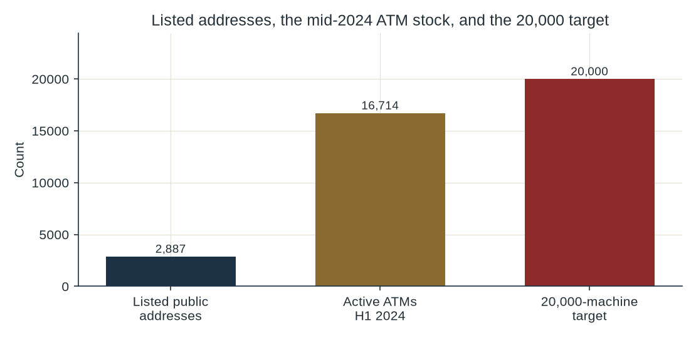
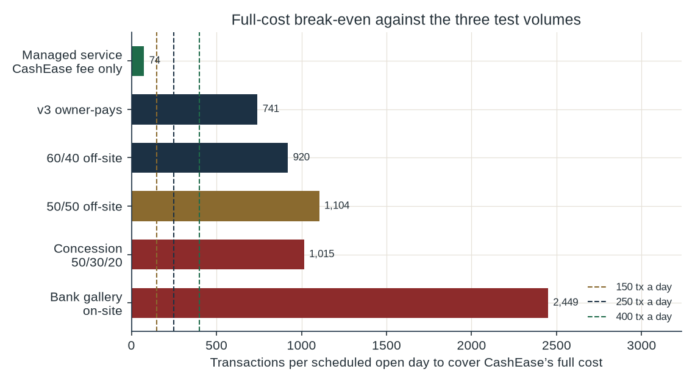
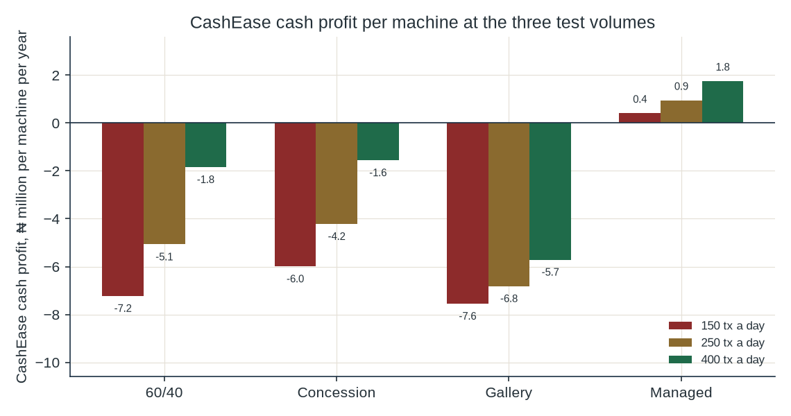

Feasibility study
CashEase would own change-and-cash kiosks. A partner bank would hold the licence, supply small notes, run cash-in-transit and settle. This study tests whether that structure makes the machines feasible.
A 60/40 fee share does not pay for a ₦65.53 million machine. Off-site, CashEase still needs 920 transactions on a scheduled open day to cover its own full cost. A bank gallery is on-site, so the ₦500 off-site surcharge does not apply, and the full-cost line there is 2,449 transactions. The concession, with free rent and bank-paid cash handling, still needs 1,015. Published address lists sum to 2,887 places before overlap and before any traffic test. That is the site screen behind a 20,000-machine target. The only open door is a bank-owned handful of machines, paid for by the bank, used to measure the change fee.
Three kinds of figure appear below.
The reference machine is the same one as in v3: a deposit-capable ATM at the bottom of a published US range, 40,000 dollars, converted at the official ₦1,331.69 per dollar on 5 October 2026.31,43 Result Ex-works ₦53.27 million. Freight is an 8% assumption. Install, solar and software are a ₦8.00 million assumption. All-in before import duty is ₦65.53 million. Duty is excluded until a customs code exists. Duty would make the machine dearer.
The v3 checks reprint. Full fixed cost of one owner-operated machine is ₦22.23 million. Cash-cost break-even is 414 transactions a scheduled open day. Full-cost break-even is 741. At 400 transactions the one-machine NPV is -₦68.4m and the capex that would earn 28% is ₦13.56 million. Those are the v3 results, recovered here so this paper is tied to the same file.
Test volumes of 150, 250 and 400 transactions a scheduled open day are assumptions. They are not observed kiosk counts. Uptime of 90% on 300 scheduled days gives 270 effective days, so 400 transactions a day is 108,000 transactions a year. The only public busy-site anecdote in the file is 80 to 100 POS transactions a day, and it is a blog, not a NIBSS average.60
The proposed sites are bank ATM galleries and forecourts, plus the busiest parks, markets and BRT hubs. A gallery or forecourt of the cash-providing bank is an on-site ATM. From 1 March 2025 the deployer surcharge of up to ₦500 per ₦20,000 is an off-site charge. On-site, another bank’s customer pays ₦100 per ₦20,000, and the customer’s own bank is free.16,51 v3 did not treat the ₦100 as deployer income. This study does not either. Result CashEase’s take at a gallery, on a 60% share of what remains after shrink, is ₦27.24 a transaction. Full-cost break-even is 2,449 transactions a scheduled open day. At 400 transactions the machine still loses ₦5.71 million of cash a year and ₦15.07 million after depreciation. Fifty galleries have an unlevered NPV of -₦4.24bn.
A park or market can be off-site, so the ₦250 surcharge assumption can apply there. That is the 60/40 case. Result Full-cost break-even is 920 transactions. At 400 the cash loss is ₦1.84 million a machine. Fifty off-site machines at that volume have an unlevered NPV of -₦3.68bn. Phase 1 fails at the gallery and at the park.
The only Phase 1 step that survives. A bank owns a handful of machines, pays the box, the maintenance, the cash and the site, and CashEase is paid to watch the meter. At a 15% fee assumption, CashEase’s own monitoring cost is covered once a machine does about 74 transactions a day. The bank, on the same machine, loses ₦17.65 million a year at 150 transactions and ₦10.02 million at 400. That is a measurement the bank would be choosing to fund. It is not a rollout of 20 to 50 CashEase-owned boxes.
Phase 2 is the 60/40 or 50/50 commercial case, off-site, with CashEase still buying the machines. Result Five hundred machines at 400 transactions a day, under 60/40, lose ₦970.97 million of cash a year after head office and ₦5.65 billion after depreciation. Unlevered NPV is -₦35.73bn. The IRR is not defined: every cash flow in the seven years is negative, including the year the project ends. One thousand five hundred machines at the same volume have an unlevered NPV of -₦106.97bn. The 50/50 split is worse at every test volume, because CashEase gives away more of the fee and still depreciates the same box.
Giving the bank 40% of all fees, in exchange for the bank paying cash-in-transit and the float, helps CashEase only while volume is low and the result is still a large loss. Result The cash-profit crossover is about 231 scheduled transactions a day. Below that, 60/40 loses less cash than v3. Above it, 60/40 loses more, because ₦31.29 a transaction given away overtakes the ₦1.95 million a year of cash-handling cost the bank has taken. The volumes at which a machine could approach break-even sit above that crossover. The share makes the owner worse off exactly where the owner would need the help.
The sketch is a 10-to-15-year build-operate-transfer concession, free public sites, CBN notes, a sandbox, concessional debt, and a 50/30/20 split of fees. The evidence contradicts the economics of that sketch.
Section 6 counts the sites. Section 8 counts the money. Section 9 shows that the interest rate, the foreign-exchange rate and the fee do not reverse it.
Five structures are calculated. The first is v3, kept so the new contracts can be compared with the owner-pays case. The others are readings of the brief. The split, the management fee and the head-office budget are assumptions. No term sheet was provided.
| Structure | Rent | CIT | Float | Capex | Maintenance | Finance |
|---|---|---|---|---|---|---|
| v3 owner-pays | CashEase | CashEase | CashEase | CashEase | CashEase | CashEase, if it borrows |
| 60/40, bank pays CIT and float | CashEase | Bank | Bank | CashEase | CashEase | CashEase, if it borrows |
| 50/50, bank pays CIT and float | CashEase | Bank | Bank | CashEase | CashEase | CashEase, if it borrows |
| 60/40 at a bank gallery | Bank premises, no extra rent | Bank | Bank | CashEase | CashEase | CashEase, if it borrows |
| Managed service, bank owns the machine | Bank | Bank | Bank | Bank | Bank | Bank |
| Concession, free site, 50/30/20 | Free public site | Bank | Bank or CBN supply | SPV, 70% debt | SPV / CashEase | SPV debt |
The fee pool starts from the v3 mix. Assumption 55% of transactions are note-breaks at ₦100, 35% are cash-outs at a ₦250 deployer surcharge, and 10% are airtime or bills at ₦30 net. Gross is ₦145.50. Shrink on the cash-out slice is ₦12.60. The pool after shrink is ₦132.90. A 60/40 share gives CashEase ₦79.74. A 50/50 share gives ₦66.45. v3 gave the bank only a quarter of the surcharge, so CashEase kept ₦111.03. The new share is a larger giveaway.
On a gallery the surcharge is set to zero. Shrink stays, because the cash still leaves the machine. The pool falls to ₦45.40 and CashEase’s 60% is ₦27.24.
The concession takes the ICRC annual fee of 1% of gross off the top, then splits what remains 50/30/20.63,65 Result CashEase keeps ₦65.72 a transaction. The 1% was missing from the sketch. It is small beside depreciation. It is still a real claim on gross, and the Commission’s own guide calls it mandatory.
Managed service gives CashEase 15% of the pool after shrink, which is ₦19.93 a transaction, and a monitoring budget of ₦400,000 a machine. Assumption The bank pays every other line, including the machine. That 15% is not a negotiated fee.
Other corrections, each one tied to a source or to the arithmetic:
People in Nigeria still hold and withdraw cash. Currency in circulation was ₦5.73 trillion at the end of 2025.32 In June 2026 it was ₦5.523 trillion, of which ₦4.92 trillion sat outside banks.33 In August 2026 currency outside banks was ₦4.87 trillion.34 The payments vision described with those figures aims to cut cash outside banks to below 40% of currency in circulation by 2028. Policy is pointed at less cash in pockets.
ATM withdrawals in the first quarter of 2025 were ₦4.81 trillion, ₦5.40 trillion and ₦5.76 trillion by month.13 Result The quarter sums to ₦15.97 trillion. A headline of ₦15.98 trillion is ₦0.01 trillion above that sum.15 This study uses ₦15.97 trillion. The first half of 2025 was ₦36.34 trillion and 858.80 million withdrawals.13,14 The rise followed the fee change. It is evidence that people still take cash. It is not a count of note-breaking.
The ATM network is thin beside peers and tiny beside POS. Active ATMs in the first half of 2024 were 16,714.1 ATMs per 100,000 adults in 2024 were 12.83 in Nigeria, 10.97 in Ghana, 6.42 in Kenya, 24.47 in India, 37.06 in Egypt and 45.96 in South Africa.3,4,5 Deployed POS terminals at the end of March 2025 were 5.90 million, with 8.36 million registered.8 The CBN’s own POS series and the NIBSS series do not measure the same thing. First-half 2024 CBN POS value was ₦85.91 trillion. NIBSS first-quarter 2025 POS value was ₦10.45 trillion on the NIBSS site and ₦10.49 trillion on a monthly sum. ₦10.51 trillion was not found.2,9,11 They must not be added together. Result Using the 2025 population of 237,527,782, there is one mid-2024 ATM per 14,211 residents, and one deployed POS per 40 residents.6,7 The ratios mix vintages. They are scale checks.
Agents did the work ATMs did not. EFInA’s 2023 survey shows formal inclusion at 64%, up from 56% in 2020, with about 40 million adults still formally excluded, and overall inclusion at 74%. Agent use rose from 4.4% of adults in 2018 to 54% in 2023. The full report says 58.3 million adults use a banking product and 45.4 million use an informal mechanism.39,40 A new cash-out machine stands next to that agent network. Note-breaking is the piece a normal POS terminal does not do.
Small notes are the product, and the issuer is not promising more of them. On 21 July 2026 Governor Cardoso said ₦5, ₦10, ₦20, ₦50 and ₦100 notes remained legal tender, and he put the scarcity down to digitisation and to the weak purchasing power of those notes.35,36 Traders told Daily Trust they struggle to find change.37 Economists quoted elsewhere say banks rarely pay the lower denominations out.38 Both accounts can be true. No CBN table found for this study splits the cash stock by denomination. The share that is ₦200 and below is unknown.
What a customer will pay is also unknown. No willingness-to-pay survey was found, so none is invented. The legal ceiling on the deployer is the off-site surcharge of ₦500 per ₦20,000, and it must be shown on the screen.51 The separate ₦100 per ₦20,000 is not modelled as CashEase income. A ₦100 fee to break a note is an assumption. Moniepoint’s published card charge is 0.5% on ₦1 to ₦20,000 and ₦100 above ₦20,000, with an ₦80,000 floor on a day’s takings.41 Customers already have a cash-out price in the market.
Result At the top of the range this study will test, a ₦200 note fee and a ₦500 surcharge, the 60/40 full-cost break-even is still 444 transactions a day, and the one-machine NPV at 400 transactions is -₦43.8m. The concession at those fees still needs 490 transactions and has a one-machine NPV of -₦47.7m. Fee tolerance, even if every customer paid the top of that range, does not carry the published machine. From 1 January 2026 an ATM withdrawal is also capped at ₦100,000 a day per customer, inside a weekly cap of ₦500,000 for an individual.74,75 Whether a pure note-for-note swap sits inside that cap is a question for counsel. It is not assumed away.
Three paths stay distinct. They were distinct in v3, and the new contract does not merge them.
| Path | What it is | What the public record says |
|---|---|---|
| Human agent | A person takes cash in and pays cash out for one principal | Guidelines of 6 October 2025. A non-human machine is quoted as barred from being the agent. |
| Independent ATM | A deployer runs a machine with prior CBN approval and a bank that provides the cash | Circular reported on 13 March 2026. This is the licence path in the brief. |
| Note exchange | Notes in, notes of the same total out, plus a fee | No published private licence, and no published ban. The CBN Act gives the Bank the currency. |
Law firms quoting the 6 October 2025 agent guidelines cite a bar on non-human and automated machines as agents, together with customer cash-in and cash-out limits of ₦100,000 a day and ₦500,000 a week, a bill limit of ₦100,000, an agent cash-out limit of ₦1.2 million a day, exclusivity, a dedicated account, and a geo-fence.18,19,20,21,22,23 The official CBN PDF returned an access error when this project was checked on 7 October 2026.24 The signed file was not opened. Geo-fence enforcement moved to 1 August 2026, and the radius in the later report is 70 metres rather than 10.16,17 That date has passed. None of the agent caps are used as the capacity of an ATM. They are the reason the machine cannot be dressed up as an agent.
The independent-ATM route, as reported from the 13 March 2026 circular, requires prior written CBN approval, a bank that provides the cash, and interoperability. Card issuers are to reach one ATM per 7,500 cards by 2028, with 30% of that ratio in 2026 and 60% in 2027.16,49,50 The 2020 electronic-payment guidelines, which those later rules are reported to have replaced in part, say that all ATMs shall be able to dispense all denominations of naira, and that funding of an ATM deployed by a non-bank is the sole responsibility of the bank that agreed to provide the cash.50,72,73 This study did not re-read a March 2026 PDF line by line on denominations. The open 2020 file and the January 2026 cash circular are the texts quoted here. The January circular says denominations may be loaded. It also removes deposit limits and sets the withdrawal caps above.74,75 Excess withdrawals are charged at 3% for individuals and 5% for corporates. BusinessDay describes the split of those charges as 40% to the CBN and 60% to the institution.75
Sections 17 to 20 of the CBN Act 2007 give the Bank the sole right to issue notes and the exchange function at its offices and at appointed agencies.25,26 A private note-for-note fee has no published licence and no published prohibition. Counsel has to say which side of that line a change kiosk sits on before anyone bolts one to a floor. The ATM-approval path does not, by itself, answer the note-exchange question.
A federal concession is a separate legal object. The August 2025 ICRC notice says the Commission covers every federal public-private partnership, and that an approval without an ICRC certificate of compliance is null and void.66 The approval thresholds sit in circular SGF.59804/II/243 of 7 July 2025, as cited in the Project Approval Board guide.67 An unsolicited proposal needs an outline business case, a financial model, a draft agreement, a non-refundable fee, and later a project bond of 1% to 5% of project cost.64 The fee schedule tops out at ₦100 million once project cost is above ₦100 billion. Result The 20,000-machine capex in this model is ₦1.31 trillion, so a proposal at that size would sit in the top band. The ₦100 million is included in that case’s year-0 cash. It does not drive the result. The bond is a requirement, not a cost charged in the profit and loss.
The financial-model guide says government may take an agreed revenue share on a user-fee partnership, and that ICRC fees may include a one-off charge of up to 5% of entry fees plus a mandatory 1% of gross revenue.63 “Entry fees” is not defined as a share of capex in the pages read here, so 5% of capex is not charged. The 1% of gross is charged, because both the guide and the 2026 model agreement treat it as payable by the concessionaire.65 The government’s 20% in the sketch is an extra assumption on top of that 1%. It is not a substitute for it.
Lagos parks, LAMATA and LASPARK are not federal MDA assets. A federal build-operate-transfer agreement cannot be assumed to include them. Each state concession would be its own statute, its own approval and its own site list. None of those documents exists for this project.
No public file gives daily transactions at Nigerian markets, parks, post offices or local-government counters. The number of sites that clear break-even is therefore unknown. What can be counted is the list of addresses, and the volume a site would have to produce.
| Published list | Count | What it is |
|---|---|---|
| Local government areas and FCT area councils | 774 | Constitution, section 3(6): 768 local governments and six area councils. |
| Post offices and postal agencies, 2025 | 2,048 | NBS postal data, unchanged from 2024. The breakdown sums to 2,048. |
| Lagos parks on the books, November 2024 | 30 | The register. The same report says well over 100 parks are unregulated. That is not a census. |
| Lagos–Ibadan standard-gauge stations | 10 | Reported at commissioning. This is one line, not a national station census. |
| LAMATA Blue Line, planned | 13 | Okokomaiko to Marina, on LAMATA’s own page. |
| LAMATA Red Line, proposed | 12 | Agbado to Marina. The same page names eight first-phase stops. |
| Sum of the rows above | 2,887 | Before removing places that appear twice, and before asking whether anyone would use a machine there. |

The postal breakdown reported with the 2025 release is 730 post offices or departments, 110 head post offices, 667 post shops, 201 postal agencies, 136 counter extensions, 115 branch offices and 89 sub-post offices.61 Result Those seven numbers sum to 2,048. An older NIPOST page that speaks of a 120 million population was not used. Putting 20,000 machines on 2,048 outlets would be about 9.8 machines per outlet. Putting them on 774 local authorities would be 25.8 machines per authority. The v3 scale check still holds: 20,000 machines would be 1.20 times the mid-2024 ATM stock.
Other lists were found and not added, because they overlap Lagos and they are not national. PPIAF’s older assessment names 145 Lagos bus parks. A LAMATA bus report says the park count had risen to more than 60. A 2022 danfo census counted 759 routes; 79 stops in one presentation are a sample.45,46,47,48 No national census of markets, bus stops or stall clusters was found. Federal secretariats and LASPARK sites were named in the brief and were not found as a counted list, so they are not given a number.
The 16,714 ATMs are machines that already exist. A second machine beside each of them would still be 16,714, not 20,000, and a machine in a bank’s own gallery would fall under the on-site fee rules in section 2. Most of those sites fail the gallery economics even before a queue is counted.
Result Sites that clear break-even, on the evidence in hand: none identified. The off-site 60/40 full-cost line is 920 transactions a scheduled open day. The concession line is 1,015. The gallery line is 2,449. The busy-POS anecdote of 80 to 100 sits under all three.60 A claim of 1,500 to 3,000 hot sites at 300 transactions a day would be an illustration. It is not a count, and 300 would still sit under those break-evens. Twenty thousand is not a plausible network on these lists. It is a target with no site file behind it.
Added government collections and payouts would be extra transactions. No volume for that use was found, so none is added. A concession that needs 488 transactions a day just to cover CashEase’s cash costs would have to show those government transactions in a count, site by site, before they could be treated as the missing traffic.
| Party | Role in the sketch | What this study can say |
|---|---|---|
| CashEase | Owns the boxes in the commercial sketch, or operates them if a bank owns them | Buying the boxes fails every phase. A fee for watching a bank-owned pilot is the only positive CashEase profit and loss. |
| Partner bank | Holds the ATM approval, supplies notes, runs cash-in-transit, settles, takes a fee share | At 60/40 the bank can make a small surplus while CashEase loses the machine. At managed service the bank inherits a loss of about ₦14.60 million a machine at 250 transactions. |
| CBN | Issuer, ATM-approval authority, possible note supplier | Approval is required and is not in hand. A note-supply contract and a sandbox instrument were not found. Public comments point to less small-note demand. |
| ICRC and the host MDA | Federal concession path | Certificate of compliance, 1% of gross, an unsolicited-proposal fee, a project bond. Federal assets only. |
| NIPOST, NRC, secretariats, local governments | Named federal or local sites | 2,048 postal outlets and 774 local authorities are real counts. They are not a traffic study. Secretariats were not found as a count. |
| State governments, LAMATA, LASPARK | Parks, markets, rail and bus sites | Outside the federal ICRC process. Lagos has 30 parks on the November 2024 register. LAMATA’s pages give 13 Blue Line stations planned and 12 Red Line stations proposed. |
| BOI, DBN, AFC, Afreximbank | Named as debt sources | BOI describes below-market MSME tenors of 3 to 5 years. DBN is wholesale and reports ₦1.4 trillion disbursed by December 2025. No AFC or Afreximbank rate for this asset was found. |
| Customers and today’s agents | The queue, and the competing cash-out | No measured willingness to pay a change fee. Millions of POS terminals already sell cash-out. |
Annual costs of the reference machine, carried from v3 and split so a partner can take a line. Power uses 336 litres of diesel at the ₦1,810 pump quote of 6 October 2026, plus an ₦80,000 solar-upkeep assumption.54 The Dangote gantry price of ₦1,700 on 7 October 2026 is lower and is not used; using it would make power slightly cheaper and would not change the verdict.52,53
| Line | A year | Carried by |
|---|---|---|
| Rent | ₦1.80 million | CashEase, except a gallery or a free public site |
| Power | ₦688,160 | CashEase, unless the contract says otherwise |
| Connectivity | ₦216,000 | CashEase in the commercial cases |
| Cash-in-transit | ₦1.92 million | Bank in every new structure |
| Security | ₦1.44 million | CashEase, including at a gallery |
| Maintenance, 10% of ex-works | ₦5.33 million | Whoever owns the machine |
| Insurance on the machine | ₦982,935 | Whoever owns the machine |
| Insurance on the float | ₦30,000 | Whoever holds the notes |
| Depreciation, seven years, no salvage | ₦9.36 million | Whoever owns the machine |
| Float, opportunity at the 23% policy rate | ₦460,000 | Whoever funds the notes |
| Monitoring, managed service only | ₦400,000 | CashEase |
Result CashEase’s full annual cost is ₦19.82 million under 60/40, ₦18.02 million at a gallery, and ₦18.02 million under the concession. The gallery and the concession match, because both leave CashEase with power, the link, security, maintenance, machine insurance and depreciation. They differ only in the fee. Taking security off the gallery as well, on the theory that the bank’s guards already stand there, moves full-cost break-even from 2,449 to about 2,254. It remains a different business from 150, 250 or 400 transactions.
| Structure | CashEase per tx | Cash break-even | Full-cost break-even | Cash break-even after 23% debt service |
|---|---|---|---|---|
| v3 owner-pays | ₦111.03 | 414 | 741 | 960 |
| 60/40, bank pays CIT and float | ₦79.74 | 486 | 920 | 1,246 |
| 50/50, bank pays CIT and float | ₦66.45 | 583 | 1,104 | 1,495 |
| 60/40 at a bank gallery | ₦27.24 | 1,177 | 2,449 | 3,401 |
| Concession, free site, 50/30/20 | ₦65.72 | 488 | 1,015 | 1,410 |
| Managed service, bank owns the machine | ₦19.93 | 74 | 74 | Not reached |

| Structure | 150 cash | 150 operating | 250 cash | 400 cash | 400 operating | NPV at 400 | IRR at 400 | Payback |
|---|---|---|---|---|---|---|---|---|
| v3 owner-pays | -₦7.9m | -₦17.7m | -₦4.9m | -₦413,155 | -₦10.2m | -₦68.4m | -44.6% | Never |
| 60/40, bank pays CIT and float | -₦7.2m | -₦16.6m | -₦5.1m | -₦1.8m | -₦11.2m | -₦70.9m | Not defined | Never |
| 50/50, bank pays CIT and float | -₦7.8m | -₦17.1m | -₦6.0m | -₦3.3m | -₦12.6m | -₦75.2m | Not defined | Never |
| 60/40 at a bank gallery | -₦7.6m | -₦16.9m | -₦6.8m | -₦5.7m | -₦15.1m | -₦82.3m | Not defined | Never |
| Concession, free site, 50/30/20 | -₦6.0m | -₦15.4m | -₦4.2m | -₦1.6m | -₦10.9m | -₦70.1m | Not defined | Never |
| Managed service, bank owns the machine | ₦407,368 | ₦407,368 | ₦945,612 | ₦1.8m | ₦1.8m | ₦5.1m | No capital outlay | Immediate |

| Structure | Bank result at 150 | Bank at 250 | Bank at 400 | Government cash at 250 |
|---|---|---|---|---|
| 60/40, bank pays CIT and float | -₦257,020 | ₦1.2m | ₦3.3m | ₦0 |
| 50/50, bank pays CIT and float | ₦281,225 | ₦2.1m | ₦4.8m | ₦0 |
| 60/40 at a bank gallery | -₦1.7m | -₦1.2m | -₦448,720 | ₦0 |
| Concession, free site, 50/30/20 | -₦812,943 | ₦251,761 | ₦1.8m | ₦1.8m |
| Managed service, bank owns the machine | -₦17.7m | -₦14.6m | -₦10.0m | ₦0 |
Read the partner table with the CashEase table. Under 60/40 at 400 transactions the bank’s full result is a surplus of ₦3.33 million while CashEase’s operating result is a loss of ₦11.20 million. The contract moves the loss onto the owner of the box. Under managed service the signs flip: CashEase’s cash profit at 250 transactions is ₦945,612, and the bank’s full result is a loss of ₦14.60 million. Fifty bank-owned machines at that volume would cost the bank about ₦730.00 million a year. Twenty thousand would cost about ₦292.00 billion a year. No reason was found for a bank to sign the larger number.
The whole project, ignoring who holds the shares, has the same problem. Result Commercial full cost against the full fee pool breaks even at 619 transactions a day. At 150 transactions the gap is ₦16.84 million a machine. A concession that drops rent and cash-in-transit, and still counts the float as having a cost, breaks even at 521. Treating the notes as free as well moves that to 508. The 100-to-150-transaction break-even in the sketch does not survive the cost stack. It would survive only if someone else also gave away the machine and the maintenance. That is a grant.
Debt makes the cash line worse. Seventy percent of one machine, repaid over five years, costs ₦16.36 million a year at 23% and ₦11.19 million a year at 7%. Both payments exceed CashEase’s fee income at 400 transactions under 60/40, which is ₦8.61 million. The machine cannot service the debt at the test volumes. The 70/30 sketch and the five-year tenor are assumptions. Bank of Industry’s MSME page describes tenors of 3 to 5 years and a moratorium of 3 to 12 months, at below-market rates, for MSMEs.55 That page is not an offer to finance a ₦65.53 million imported ATM.
Head office is an assumption, not a quote: ₦40.00 million at the start plus ₦150,000 a machine, and ₦25.00 million a year plus ₦50,000 a machine. The 20,000-machine concession also pays the ₦100 million unsolicited-proposal fee from the ICRC schedule. Float sits with the bank in every new structure, so it is not in CashEase’s year-0 cheque. There is no salvage and, unless the row is the v3 comparison, no float comes back at year 7.
| Case | Year-0 cash | Cash profit | Operating | NPV at 28% | IRR | Payback |
|---|---|---|---|---|---|---|
| 50 · 60/40 · 250 tx | -₦3.32bn | -₦281.1m | -₦749.1m | -₦4.15bn | Not defined | Never |
| 50 · 60/40 · 400 tx | -₦3.32bn | -₦119.6m | -₦587.7m | -₦3.68bn | Not defined | Never |
| 50 · gallery · 400 tx | -₦3.32bn | -₦313.1m | -₦781.2m | -₦4.24bn | Not defined | Never |
| 500 · 60/40 · 400 tx | -₦32.88bn | -₦971.0m | -₦5.65bn | -₦35.73bn | Not defined | Never |
| 500 · 50/50 · 400 tx | -₦32.88bn | -₦1.69bn | -₦6.37bn | -₦37.84bn | Not defined | Never |
| 1,500 · 60/40 · 400 tx | -₦98.56bn | -₦2.86bn | -₦16.90bn | -₦106.97bn | Not defined | Never |
| 1,500 · 50/50 · 400 tx | -₦98.56bn | -₦5.02bn | -₦19.06bn | -₦113.29bn | Not defined | Never |
| 20,000 · concession · 150 tx | -₦1.31tn | -₦120.87bn | -₦308.09bn | -₦1.67tn | Not defined | Never |
| 20,000 · concession · 250 tx | -₦1.31tn | -₦85.38bn | -₦272.60bn | -₦1.56tn | Not defined | Never |
| 20,000 · concession · 400 tx | -₦1.31tn | -₦32.14bn | -₦219.37bn | -₦1.41tn | Not defined | Never |
The shape of the cash flow is the same in every CashEase-owned case. Year 0 is the outflow in the table. Each of the next seven years is the cash-profit column, repeated. Nothing large comes back at the end. Cumulative cash never crosses zero. Payback does not occur. A levered case is tighter still: year 0 falls to the 30% equity cheque, and years 1 to 5 then subtract debt service.
| Case | Rate | Annual debt service | Cash profit before debt | Equity NPV at 28% | IRR |
|---|---|---|---|---|---|
| 50 machines, 60/40, 400 tx | 23% | ₦818.1m | -₦119.6m | -₦3.45bn | Not defined |
| 50 machines, 60/40, 400 tx | 7% | ₦559.4m | -₦119.6m | -₦2.80bn | Not defined |
| 50 machines, 60/40, 400 tx | 0% | ₦458.7m | -₦119.6m | -₦2.54bn | Not defined |
| 500 machines, 60/40, 400 tx | 23% | ₦8.18bn | -₦971.0m | -₦33.51bn | Not defined |
| 500 machines, 60/40, 400 tx | 7% | ₦5.59bn | -₦971.0m | -₦26.96bn | Not defined |
| 500 machines, 60/40, 400 tx | 0% | ₦4.59bn | -₦971.0m | -₦24.41bn | Not defined |
| 20,000 concession, 250 tx | 23% | ₦327.24bn | -₦85.38bn | -₦1.48tn | Not defined |
| 20,000 concession, 250 tx | 7% | ₦223.75bn | -₦85.38bn | -₦1.21tn | Not defined |
| 20,000 concession, 250 tx | 0% | ₦183.48bn | -₦85.38bn | -₦1.11tn | Not defined |
| 20,000 concession, 400 tx | 23% | ₦327.24bn | -₦32.14bn | -₦1.32tn | Not defined |
| 20,000 concession, 400 tx | 7% | ₦223.75bn | -₦32.14bn | -₦1.06tn | Not defined |
| 20,000 concession, 400 tx | 0% | ₦183.48bn | -₦32.14bn | -₦955.29bn | Not defined |
Result At 400 transactions, 20,000 concession machines have a year-0 cheque of ₦1.31 trillion unlevered and an annual operating loss of ₦219.37 billion. Equity NPV stays negative at a zero interest rate. The same pattern holds at 250 transactions, where the operating loss is larger. At 150 transactions the unlevered NPV is -₦1.67tn.
Foreign exchange and the fee were moved one at a time. A 20% rise in the naira cost of the imported machine, freight included, takes all-in cost from ₦65.53 million to ₦77.03 million. Install and software stay at the naira assumption.
| Structure | Fee case | CashEase per tx | Full-cost break-even | NPV at 400 tx | FX |
|---|---|---|---|---|---|
| 60/40 | ₦50 / ₦150 | ₦42.24 | 1,737 | -₦82.8m | Base FX |
| 60/40 | ₦100 / ₦250 | ₦79.74 | 920 | -₦70.9m | Base FX |
| 60/40 | ₦200 / ₦500 | ₦165.24 | 444 | -₦43.8m | Base FX |
| 60/40 | ₦100 / ₦250 | ₦79.74 | 1,054 | -₦86.1m | FX +20% on the machine |
| Concession | ₦50 / ₦150 | ₦34.79 | 1,918 | -₦79.9m | Base FX |
| Concession | ₦100 / ₦250 | ₦65.72 | 1,015 | -₦70.1m | Base FX |
| Concession | ₦200 / ₦500 | ₦136.26 | 490 | -₦47.7m | Base FX |
| Concession | ₦100 / ₦250 | ₦65.72 | 1,178 | -₦85.2m | FX +20% on the machine |
| Gallery | Note fee only | ₦10.74 | 6,213 | -₦87.5m | Base FX |
| Gallery | Note fee only | ₦27.24 | 2,449 | -₦82.3m | Base FX |
| Gallery | Note fee only | ₦60.24 | 1,108 | -₦71.8m | Base FX |
| Gallery | Note fee ₦100 | ₦27.24 | 2,841 | -₦97.4m | FX +20% on the machine |
The generous fee pair, ₦200 to break a note and the ₦500 legal cap on the surcharge, still leaves a negative NPV at 400 transactions for 60/40, for the concession and for the gallery. A weaker naira widens the loss. The split is already the difference between the rows: 50/50 is in section 8, and it is worse than 60/40. The interest-rate table is the rate sensitivity. None of the five switches — fee, volume, split, rate, exchange rate — produces a CashEase-owned machine with a positive NPV at the published price.
| Structure | Ceiling at 150 tx | Ceiling at 250 tx | Ceiling at 400 tx |
|---|---|---|---|
| v3 owner-pays | No price works | No price works | ₦13.6m |
| 60/40, bank pays CIT and float | No price works | No price works | ₦11.6m |
| 50/50, bank pays CIT and float | No price works | No price works | ₦8.4m |
| 60/40 at a bank gallery | No price works | No price works | No price works |
| Concession, free site, 50/30/20 | No price works | No price works | ₦12.3m |
Local assembly would have to land at or below the ceiling, after freight, install and software. At 150 and at 250 transactions a day there is no such price for any structure in which CashEase buys the machine. The cash costs that do not shrink with the box — rent where it applies, security, power, the link — already consume the fee share. At 400 transactions the 60/40 ceiling is ₦11.62 million and the concession ceiling is ₦12.26 million. Both sit far under ₦65.53 million. No Nigerian factory quote was found, so this study does not apply a discount and then hope. A quote above the ceiling fails. A quote below it would still need the 400-transaction volume, which nobody has measured.
Do not raise equity to buy machines. Do not draw a 70/30 debt package against this asset. The funding that matches the arithmetic is narrower.
Development Bank of Nigeria lends wholesale through financial institutions and reports ₦1.4 trillion disbursed as of December 2025.57 That is the scale of the institution. It is not a commitment. Bank of Industry’s public MSME terms are the closest concessional description, and GLOW’s 7% is the only specific rate used here, with the product limit stated.55,56 AFC and Afreximbank are named in the brief. No rate from either was found for this asset, so none is shown.
| Risk | Why it is in the file | What to do |
|---|---|---|
| Small-note supply | The governor has tied scarcity to falling demand. The 2026 rule allows every denomination. It does not show that cassettes are filled. | A written delivery schedule of ₦100, ₦200 and ₦500 notes before any order. If the bank will not sign it, stop. |
| Wrong licence | Agent rules are quoted as barring non-human machines. Note exchange has no published private licence. | Counsel’s opinion on the ATM path and the note-exchange path, against the signed guidelines and the CBN Act. |
| On-site fee | Galleries do not earn the ₦500 surcharge. The model’s gallery break-even is 2,449 transactions. | Do not underwrite a gallery on off-site fee maths. |
| Volume | No site file shows 150, 250 or 400 paid transactions a day. The public anecdote is 80 to 100. | Count paid transactions, refusals and stock-outs on bank-owned machines. Do not extrapolate. |
| Fee refusal | No willingness-to-pay study. Traders sometimes need change and sometimes will not pay for it. | The pilot records the refusal rate at the posted fee. A refusal majority kills the fee assumption. |
| FX and duty | A 20% dearer machine raises 60/40 full-cost break-even to 1,054. Duty is not in the price yet. | A naira quote, duty included, before any order. If it sits above the ceiling, stop. |
| Debt service | Five-year service on 70% of one machine is ₦16.36 million a year at 23%, against fee income of ₦8.61 million at 400 transactions. | Do not borrow to buy the box. A zero rate was tested. The NPV stays negative. |
| Fraud and theft | NIBSS reports ₦52.26 billion lost in 2024 and ₦25.85 billion in 2025, with Lagos at 63.43% of 2025 fraud activity. | The bank’s existing ATM controls, or no machine. Shrink in this model is only the 0.3% assumption. |
| Concession process | ICRC certificate, 1% of gross, a bond, and a second capex cycle inside a 10-to-15-year term. State sites sit outside the federal process. | Do not file a 20,000-machine unsolicited proposal on this record. |
| Partner economics | Managed service makes CashEase’s books look healthy by handing the bank a loss of ₦10.02 million a machine at 400 transactions. | Ask the bank to initial that loss in a term sheet. A verbal interest is not a term sheet. |
| Months | Work | Spend | Stop if |
|---|---|---|---|
| 1–2 | Two opinions: counsel on the licence and the note swap; two banks on who would own a machine. | Inside the ₦3 million stop-case assumption. | Either opinion comes back closed. |
| 3–4 | If a bank will own the boxes, write the measurement: fee, refusals, paid transactions, stock-outs, cash-in-transit misses. Cap the fleet at the loss the bank initials. | CashEase still buys no machines. Staffing sits in the ₦8 million assumption. | The bank will not put the loss in a term sheet. |
| 5–8 | Run the bank-owned machines. Publish the weekly counts to the bank and to CashEase. No press release that treats a pilot as a network. | Bank opex. CashEase time only. | Uptime, notes or the fee collapse in the first month. Stop early. |
| 9–10 | Set the measured daily transactions next to the break-even of the signed structure. | No new money. | The count sits under the break-even. Stop. |
| 11–12 | Only if the count clears the gate: ask for one Nigerian delivered quote, duty included, and set it next to the ceiling. | The quote is free to request. Do not place an order in this year. | The quote sits above the ceiling, or no quote comes. |
Do not file an ICRC unsolicited proposal in these twelve months. Do not commission a factory. Do not hire a national site-acquisition team. The v3 attended test, a person with a cash box and no machine, remains available if the banks refuse the pilot and counsel leaves the note-exchange question open. That test is specified in the v3 study. It is not re-costed here.
Ex-works naira = 40,000 × 1,331.69 = 53,267,600.
All-in = ex-works × 1.08 + 6,000,000 + 2,000,000 = 65,529,008.
Gross fee = 0.55 × note fee + 0.35 × surcharge + 0.10 × 30. Shrink = 0.35 × 12,000 × 0.003 = 12.60. On a gallery the surcharge is zero and shrink stays.
v3 CashEase take = gross − 0.25 × (0.35 × surcharge) − shrink = ₦111.025.
Share take = CashEase share × (gross − shrink − ICRC rate × gross). ICRC rate is 1% on the concession and zero otherwise.
Depreciation = all-in / 7. Maintenance = 0.10 × ex-works. Machine insurance = 0.015 × all-in. Float insurance = 0.015 × 2,000,000. Float opportunity = 2,000,000 × 0.23.
Diesel litres = 8 × 300 × 0.40 × 0.35 = 336. Power = 336 × 1,810 + 80,000.
Break-even transactions per open day = (annual cost CashEase bears / CashEase naira per transaction) / 270.
NPV discounts year-0 capex, seven years of cash profit after head office where a fleet is shown, and no salvage. The rate is 28% unless a row says 23%. IRR uses a solver between −99% and 500%. “Not defined” means there is no root in that range and the project does not earn a positive return. “Above 500%” would mean a thin CashEase outlay against a fee; it does not appear in the CashEase-owned fleet, because those cash flows never turn positive. Payback is undiscounted and is “Never” when cumulative cash stays negative.
Debt service is an annuity on 70% of capex for five years. The 23% rate is the policy rate from the 307th Monetary Policy Committee meeting on 21–22 September 2026, down from 26.50%.29,30 Inflation was 15.39% in August 2026.30 The model does not inflate costs. If costs rose with that rate and fees did not, the losses would be wider. Tax is not modelled. Losses do not need a tax rate to be losses.
The 20% exchange-rate case multiplies ex-works and the 8% freight by 1.2 and leaves the naira install and software unchanged. All-in becomes 77,034,810.
Recompute from model/machine_model.py. The tables in this PDF were written by that script.
Every external fact points here. Pages were read in the first week of October 2026. Where a CBN file could not be opened, the failure is stated in the section that uses it. The v3 study remains the fuller narrative of the market statistics reused below.
End of study. Model file model/machine_model.py. Rebuild with source/build_study.py.